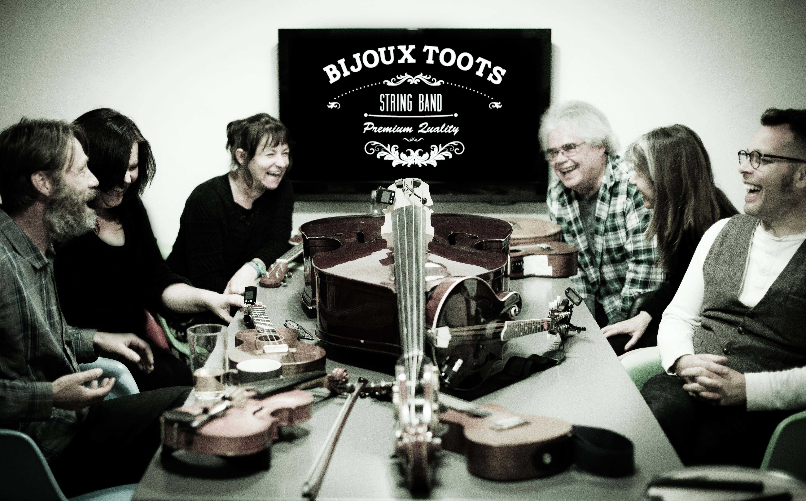

<div class="event-info">
	<div>
		<center>
			<picture>
				<source srcset="img/bands/2.webp" type="image/webp">
				<source srcset="img/bands/2.jpg" type="image/jpeg">
				
			</picture>
		</center>
	<br>
	<b><i>A Covers Band With A Twist</i></b>
	<br>
	THE BIJOUX TOOTS love music and it shows. Based on the Suffolk/North Essex border, this talented bunch of musicians focus on strong vocal harmonies, combined with accordion, mandolin, fiddle, bouzouki, guitar, ukulele and double-bass. Where Bluegrass and Folk traditions cohabit with Pop and Rock to bring a refreshingly curious twist to the covers band formula.
</div>
</div>